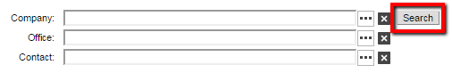
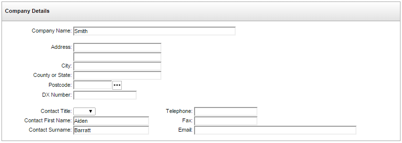
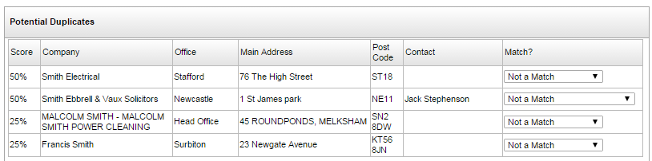
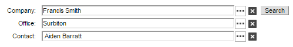

To search for a company:
- On the screen where you add or update the company, click the Search button. (You do not need to type anything in the Company, Office or Contact fields.)

- Type in the details you know for the company or person.

As you type,

The list of possible matches is sorted by their score; this is based on how many of the fields you entered match the information on the Company Information Workbench records.
By default, the Match? field is set to Not a Match. This indicates that the company is not the one you were searching for. If none of the potential matches have an action selected, then, when you click the Process button at the bottom of the screen (step 4),
- If one of the lines in the Potential Duplicates list shows the information you are searching for, update the Match? field as follows:
Company Only - only the company is correct.
When you click the Process button (step 4) the following will take place:- If you entered the first line of the address and a
- If you entered a
Company and Office - the entry is for the correct company and office, but not the correct contact person.
When you click the Process button (step 4) the following will take place:- If you entered a
Company, Office and Contact - the entry is for the correct company, office and contact.
NOTE
Do not change the Match? field on more than one line. - Click the
 button.
button. -

NOTES
If
If